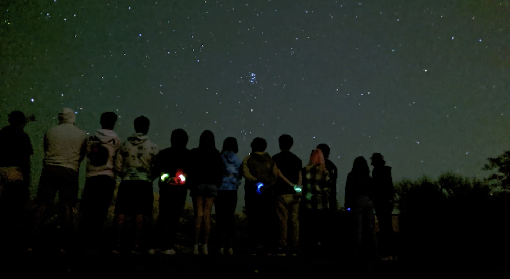
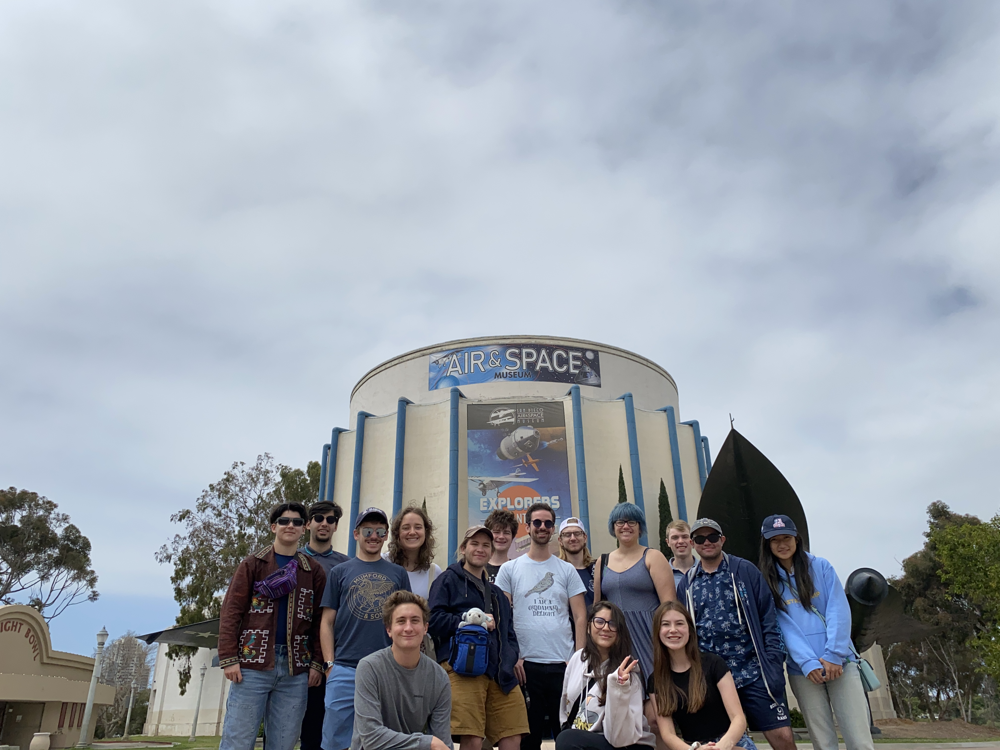
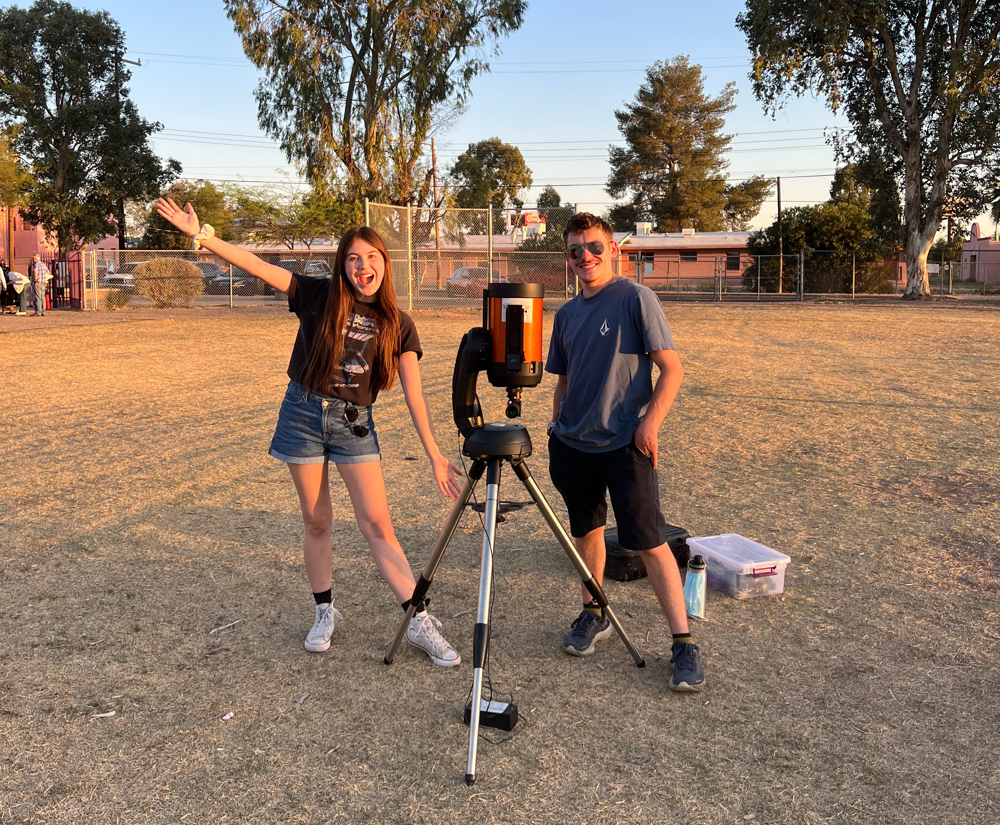

As astronomers, spending long days and late nights coding at our desks can make one feel removed from the general public. Participating in outreach bridges our connection and helps us relay our experiences as scientists to those who are more casually interested in the topic. My favorite part of outreach is actually when younger students tell me the facts they learned in class about stars and planets. Their genuine excitement is reinvigorating!

Outreach
Current Outreach
In Santa Cruz, I signed up to participate in Project for Inmate Education, a program where graduate students and faculty teach a 10-week college-level, pre-algebra, algebra, and introductory astronomy courses at the county jail. As volunteers, we rotate between lecturing and grading the students’ assessments.
I am continuing to make the field more accessible for people in systemically marginalized communities through mentorship programs at UCSC’s Women in Science and Engineering (WiSE) to encourage the pursuit of higher education as well as mentor undergraduate researchers!
Previous Outreach
As an undergraduate at the University of Arizona, I participated in many outreach programs through the University's Astronomy club.
I was vice president in 2021 and President in 2022 and we organized many outreach events at local elementary, middle, and high schools in the local Tucson area. We would bring the club-owned telescopes and point them to different objects in the night sky.
We also organized club trips to dark sky spots to showcase the stunning beauty of the Milky Way at night and we had an overnight trip to San Diego to explore the air and space museum and palomar mountain at night!


